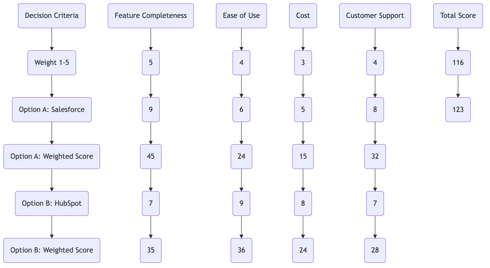

Decision Matrix¶
In personal life and business management, we often face the dilemma of making difficult choices among multiple seemingly good options: Which supplier should we choose? Which product feature should be prioritized for development? Which candidate should be hired? When decisions involve multiple complex criteria of varying importance, relying solely on intuition or a simple pros and cons list often makes it difficult to make the most rational and convincing decision. Decision Matrix Analysis is a systematic, visual decision-making tool designed to solve such problems.
Its core idea is to identify the optimal option in a logically clear and relatively objective way by cross-evaluating all alternative solutions (Options) and all important decision criteria (Criteria) in a two-dimensional matrix, and assigning corresponding weights to each criterion, ultimately calculating a weighted total score for each solution. It transforms a complex, vague multi-criteria decision problem into a clear, quantifiable mathematical problem, greatly enhancing the transparency and rationality of the decision.
Components of a Decision Matrix¶
A standard decision matrix is mainly composed of the following parts:
- Options: The various alternatives you need to compare and choose from. For example, three different mobile phone suppliers A, B, and C.
- Criteria: The important factors you use to evaluate these options. For example, price, features, customer service, reliability, etc.
- Weights: Not all criteria are equally important. You need to assign a weight score (e.g., from 1 to 5 or 1 to 10) to each decision criterion to reflect its relative importance in the final decision.
- Scores: For each criterion, score each alternative (e.g., from 1 to 10, with 10 being the best fit for that criterion).
- Weighted Scores: The final score of each option under a single criterion, calculated as: Score × Weight.
- Total Score: The final total score obtained by summing up the weighted scores of each option across all criteria. The option with the highest total score is the theoretically optimal solution.
Decision Matrix Template¶

How to Use a Decision Matrix¶
-
Step One: List All Alternatives Clearly define all feasible options you are considering.
-
Step Two: Identify All Relevant Decision Criteria Brainstorm with the team to list all important factors that will influence this decision as comprehensively as possible. Ensure these criteria are specific and measurable.
-
Step Three: Assign Weights to Criteria This is a very critical step. The team needs to discuss and reach a consensus on the relative importance of each criterion. You can set a total weight (e.g., 100 points) and then distribute it; or simply use a rating system (e.g., 1-5 points). The assignment of weights directly reflects your decision preferences and strategic priorities.
-
Step Four: Score Each Alternative Against Each Criterion Evaluate how well each alternative performs against each criterion and assign an objective score. To ensure fairness, it's best to set clear benchmarks for scoring. For example, under the "Cost" criterion, you might stipulate that "annual cost below $5000 is 10 points, above $20000 is 1 point."
-
Step Five: Calculate Weighted Scores and Total Scores Calculate the weighted score for each cell (= score of that cell × weight of the corresponding criterion). Then, sum up the weighted scores for each alternative (each column) to get its final total score.
-
Step Six: Analyze Results and Make a Decision The alternative with the highest total weighted score is the optimal choice based on your criteria and weights. However, a decision matrix is an aid, not an absolute command. Before making the final decision, you should also conduct sensitivity analysis (how would the results change if a certain weight were changed?) and apply common sense judgment.
Application Cases¶
Case 1: Choosing a Vacation Destination
- Alternatives: A. Island (e.g., Maldives); B. Historic City (e.g., Rome); C. Natural Scenery (e.g., New Zealand).
- Decision Criteria and Weights: Budget (5), Relaxation Level (4), Cultural Experience (3), Food (3), Flight Duration (2).
- Analysis: By scoring and calculating, you might find that although Rome scores highest in cultural experience and food, considering the high weight of budget and relaxation level, an island trip might end up with the highest total score. This process helps you clearly see your true preferences.
Case 2: Company Choosing Office Location
- Alternatives: A. Downtown office building; B. Suburban tech park; C. Flexible co-working space.
- Decision Criteria and Weights: Monthly rent cost (5), Transportation convenience (5), Attractiveness to talent (4), Office space and scalability (3), Surrounding amenities (2).
- Analysis: A decision matrix can help the company quantitatively compare the overall pros and cons of the three options. For example, while a suburban tech park might have low rent, it might score poorly on transportation and talent attraction, ultimately resulting in a lower total score than a downtown office building.
Case 3: Task Prioritization in Project Management
- Alternatives: Five product features to be developed: A, B, C, D, E.
- Decision Criteria and Weights: Contribution to user value (5), Potential impact on revenue (4), Development effort (negative weight -3), Technical implementation difficulty (negative weight -2).
- Analysis: Through this matrix, product managers can move beyond a simple "feature list" and decide the focus of the next development cycle in a more strategic way, and clearly explain their decision basis to the team and leadership.
Advantages and Challenges of Decision Matrix¶
Core Advantages
- Clear and Transparent Process: Breaks down complex decision-making into clear steps, making the basis of the decision evident and easy to explain and defend to others.
- Overcomes Emotional Bias: By quantifying, it reduces bias in the decision-making process caused by personal emotions, intuition, or recent events.
- Promotes Team Consensus: Provides a structured framework for the team to jointly discuss and negotiate decision criteria and their weights, helping to achieve consensus.
Potential Challenges
- "Disguised Objectivity": The final result of a decision matrix heavily relies on the subjective inputs of weights and scores. If the initial definition of criteria and weights is biased, the entire matrix merely "mathematizes" this bias.
- Difficulty in Criterion Selection: Choosing a comprehensive, appropriate, and mutually exclusive set of decision criteria is inherently difficult.
- Potential for Oversimplification: For extremely complex, uncertain strategic decisions, simple weighted scoring might overlook dynamic, non-linear interactions between factors.
Extensions and Connections¶
- Cost-Benefit Analysis: When decision criteria can primarily be categorized into "costs" and "benefits," a decision matrix evolves into a more specific cost-benefit analysis.
- Analytic Hierarchy Process (AHP): A more complex and precise multi-criteria decision analysis method. It determines weights through pairwise comparisons and performs consistency checks, suitable for higher-risk, more significant decision scenarios.
Reference: The concept of decision matrices, also known as Pugh Matrix, Decision Grid, or Problem Selection Matrix, is a fundamental and practical tool in quality management and decision science, with its ideas rooted in the field of Multi-Criteria Decision Analysis (MCDA).